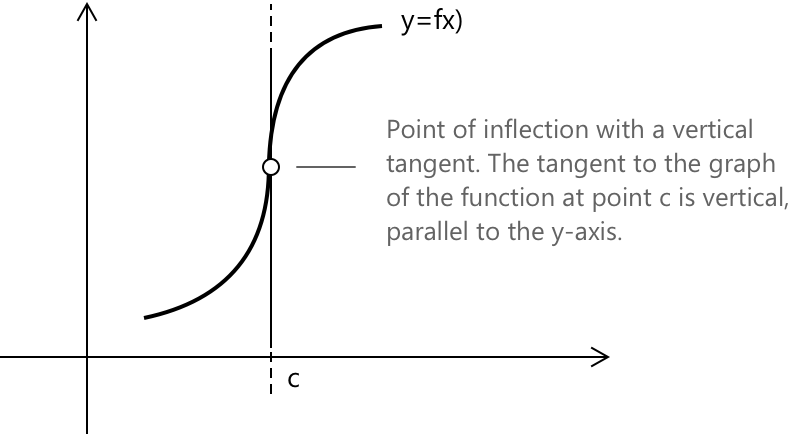
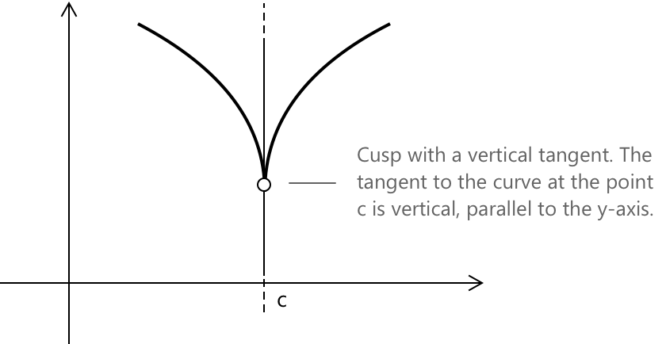
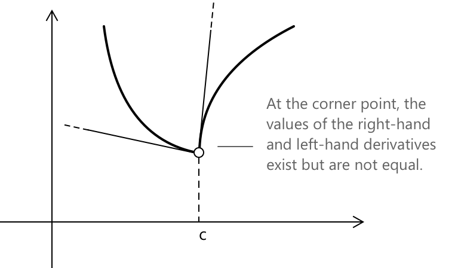

Точки недиференційовності
Що таке точки недиференційованості
У статті про похідні ми бачили, що якщо функція \( f(x) \) є диференційовною в точці \( c \), то функція є неперервною в цій точці. Однак існують випадки, коли функція є неперервною в \( c \), але не є диференційовною. Загалом, точки недиференційованості функції \( f(x) \) виникають, коли:
-
Права та ліва границі прирісту функції існують і є скінченними, але не рівні між собою. \[f_{-}’ \left( c \right) \neq f_{+}’ \left( c \right)\]
-
Границя приросту функції є нескінченною.
Ці точки поділяються на три основні типи, які ми розглянемо нижче.
Точка перегину з вертикальною дотичною
Точка перегину — це точка, в якій змінюється випуклість функції. У цьому випадку ми маємо точку недиференційованості \( c \) функції, що призводить до точки перегину з дотичною, паралельною \( y \)-осі (вертикальною дотичною). У такій точці відбувається наступне:

Така поведінка вказує на те, що кутовий коефіцієнт дотичної стає вертикальним при \( x = c \), тоді як функція може змінити випуклість навколо цієї точки. У випадку, показаному на рисунку, ми маємо \[f_{-}’ \left (c \right) = f_{+}’ \left(c \right) = +\infty \]
Якби крива була віддзеркалена відносно осі y, ми б мали \[f_{-}’ \left (c \right) = f_{+}’ \left(c \right) = -\infty \]
Каспи
У випадку каспів права та ліва границі є нескінченними та мають протилежні знаки.

У випадку, показаному на рисунку, ми маємо: \[ f_{-}’ \left( c \right) = -\infty \quad \text{та} \quad f_{+}’ \left( c \right) = +\infty \]
Якби касп був спрямований вгору замість того, щоб бути спрямованим вниз, ми б мали: \[ f_{-}’ \left( c \right) = +\infty \quad \text{та} \quad f_{+}’ \left( c \right) = -\infty \]
Злами
Злам виникає, коли ліва похідна та права похідна існують, але не рівні. У випадку точок зламу до графіка в одній і тій самій точці існують дві дотичні, і вони відрізняються одна від одної.

У цьому випадку ми маємо:
\[f_{-}’ \left (c \right) \neq f_{+}’ \left(c \right) \]
Як ми можемо перевірити диференційовність функції, не покладаючись на границю її приросту?
Загалом, нехай \( f(x) \) — функція, неперервна на проміжку ([a,b]) та диференційовна на цьому проміжку, за можливим винятком точки \( x_0 \in [a,b] \). Якщо границі \(\lim_{x \to x_0^-} f’(x) \) та \( \lim_{x \to x_0^+} f’(x)\) існують, то:
\[ f_{-}’ (x_o) = \lim_{x \to x_0^-} f’(x) \quad \text{та} \quad f_{+}’ (x_o) = \lim_{x \to x_0^+} f’(x) \]
якщо \( \underset{x \to x_0^-}{\lim} f{\prime}(x) = \underset{x \to x_0^+}{\lim} f{\prime}(x) = \ell\), де \(\ell \in \mathbb{R}\), то функція є диференційовною в точці \(x_0\), і звідси випливає, що \(f’(x_0) = \ell\).